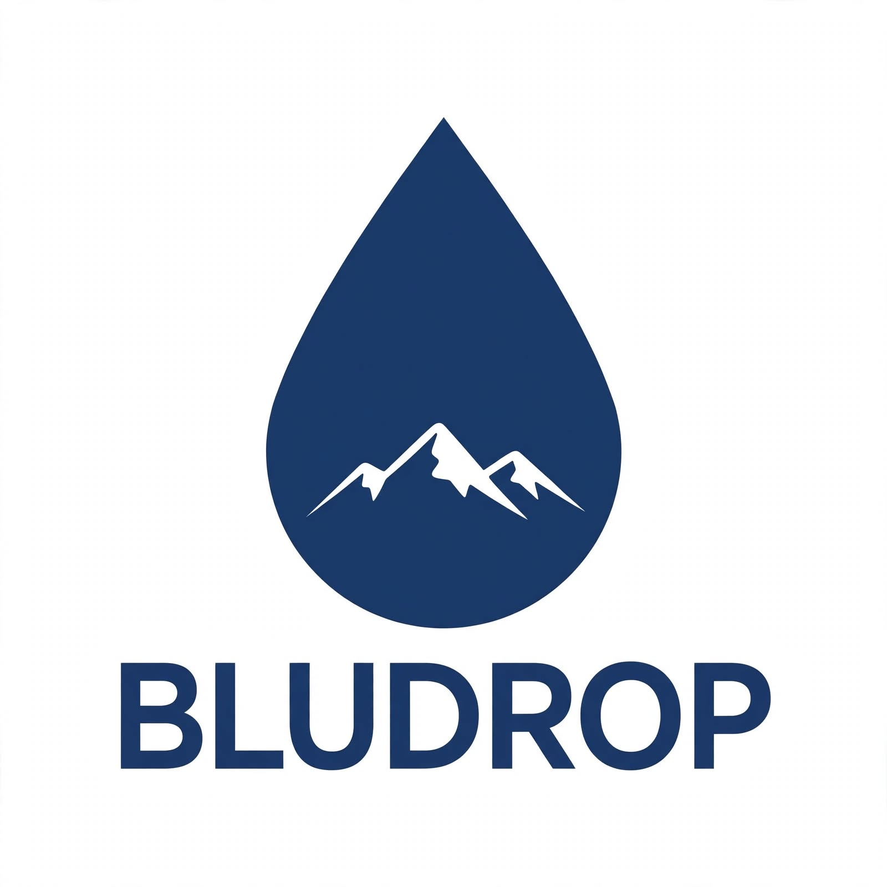

Ciao siamo Jacopo e Niccolò...
Jacopo Passavanti e Niccolò Costantini. Due strade diverse, diversa passione ma stesso problema: tutte le borracce che avevamo erano o troppo tecniche e brutte, o belle ma inutili dopo due o tre usi.
Tra un render e una riga di codice abbiamo disegnato BLUDROP. Il nostro logo è tutto ciò che siamo: una borraccia blu notte, come il cielo alle 5 di mattina quando parti, una goccia al centro e dentro due montagne stilizzate. Le nostre due vite.
BLUDROP non è un grande brand. Siamo due studenti di San Donnino (Campi Bisenzio) che vogliono fare una cosa fatta bene, senza plastica inutile e senza marketing finto. Progettiamo in Toscana, testiamo sull'Appennino, e non solo.

Da San Donnino (Campi Bisenzio) all'Appennino. 60km di differenza.
Qui nasce il disegno. Tra Figma e stampante 3D.
-10°C, vento. Se tiene qui, tiene ovunque.
Disegno e modellazione 3D. Ogni curva è disegnata a mano.
Prototipi in PLA per testare l'impugnatura prima dell'acciaio.
24H con ghiaccio dentro. Termometro alla mano sul Cimone.